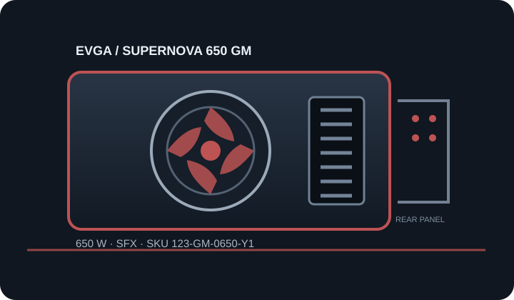

[ POWER CONVERSION // IDENTIFIED MODEL ]
EVGA SuperNOVA 650 GM (123-GM-0650-Y1)
Manufacturer SKU 123-GM-0650-Y1. Verify the printed unit label, production revision and regional suffix against matching manufacturer documentation before selecting or installing.

HIGH-VOLTAGE SAFETY: Disconnect mains before external inspection. Never open, probe or repair a PSU; hazardous voltage can remain after unplugging. Replace damaged, wet, burned, modified or unidentified units as complete assemblies or use qualified service.
Model-specific input, output & fit
| Manufacturer model / SKU | EVGA SuperNOVA 650 GM; 123-GM-0650-Y1. Market suffix and hardware revision must match the nameplate. | |||||||||||||||
|---|---|---|---|---|---|---|---|---|---|---|---|---|---|---|---|---|
| Rated output / efficiency certification | 650 W continuous class; 80 PLUS Gold as identified in manufacturer product material. Certification does not establish condition or system suitability. | |||||||||||||||
| Form factor / ATX/SFX revision | SFX; SFX12V/ATX12V-era model, not identified by EVGA as ATX 3.x. Verify production revision, region and supplied lead kit. | |||||||||||||||
| AC input | Use the exact regional nameplate for AC voltage, frequency and current; do not transfer an input range between regional variants. | |||||||||||||||
| Maximum DC output | 650 W total; per-rail and combined ceilings below remain controlling. | |||||||||||||||
| DC output rails |
| |||||||||||||||
| Connectors / modular cables | Fully modular: ATX 24-pin ×1; EPS 4+4-pin ×1; PCIe 6+2-pin ×4 (two leads); SATA ×6; peripheral 4-pin ×4; floppy adapter may vary by bundle. | |||||||||||||||
| Mechanical envelope | 100 × 125 × 63.5 mm (depth × width × height). Confirm mounting points, inlet/fan orientation, obstruction and cable-bend clearance against the case drawing; never force-fit. | |||||||||||||||
| Fan mode / acoustics | 92 mm double-ball-bearing fan with EVGA ECO mode; low-load fan-off behavior depends on ECO setting and thermal conditions. | |||||||||||||||
| Protection features | OVP, UVP, OCP, OPP and SCP protections described in EVGA materials; do not open or test internally. |
Compatibility & safe installation
- Use cables explicitly approved for SuperNOVA 650 GM; its modular PSU-end wiring is not standardized. Verify load and SFX fan intake clearance.
- Check motherboard ATX main power, CPU EPS, GPU leads, peak/transient load, each rail ceiling, AC region and cooling separately; plug shape and nominal wattage alone are insufficient.
- PSU-side modular pinouts are not standardized. Never transfer, splice, repin or adapt leads unless the manufacturer approves the exact cable for this exact model and revision.
- Compare connector clearance and cable-bend space against the actual chassis. Stop if label, connector inventory or production revision differs from the listing.
- Do not open or electrically probe the PSU. Isolate mains and replace a suspect assembly; qualified technicians must follow the matching model procedure.
Revision & sourcing notes
This page distinguishes the listed SKU from adjacent capacities, regional suffixes and redesigns. Similar branding is not enough to identify a cable set or electrical table. Manufacturer documentation and the physical nameplate take precedence where revisions differ.
Published certification and ratings describe the product as specified, not the condition or remaining service life of a used PSU.
Manufacturer sources
- EVGA SuperNOVA 650 GM product pageManufacturer SKU identity, 650 W rating, Gold certification and model features.
- EVGA official manuals portalManufacturer support portal; locate the 650 GM guide matching SKU 123-GM-0650-Y1 for output/cable instructions.
Use the exact model/revision sources and the physical unit label. This reference is not a service procedure or connector pinout.